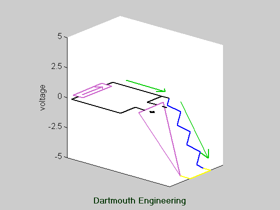

This is a "transimpedance amplifier"--an amplifier with a current input and
a voltage output, constructed using an op-amp. Since the input current
to the op-amp is zero, the current in the feedback resistor has to be equal
to the input current. The op-amp provides the output voltage necessary
to equalize these currents with the inverting input voltage held equal to
the non-inverting input voltage (which is zero since it's tied to ground).
This type of amplifier is often used in optoelectronics, because photodetectors
are typically operated so as to produce a current output that then must be
amplified.